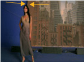
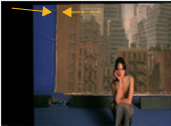

This chapter looks at how to use F_Align to register (line up) two shots that are of the same scene, but have slightly different camera motion and foreground objects. This can be useful, for example, for doubling up the crowd size by lining up and comping together two shots of the same scene, or locking your freshly generated clean plate to the original.
F_Align takes two sequences that were shot of the same scene and lines them up spatially. It uses Global Motion Estimation (GME) to calculate a four-corner pin so that each frame in one shot (the source input) will be aligned with the corresponding frame in a second shot (the reference input). The result is the source image which has been repositioned to line up with the reference image.
|  | |
| Source image. Notice the position of the background. |
Reference Image. |
|  | |
| Output from F_Align. The source image has been repositioned so that the background lines up with the reference image. |
The output of F_align comped together with the reference image. |
To be able to align the sequences, F_Align analyzes them for global motion. This analysis can be triggered for the complete sequence, specified frame range, or a single frame when you press the Analyse button in the F_Align controls. Alternatively, it can be done on the fly for a single frame when you move to a new frame on the timeline. The advantage of pressing Analyse is that during the analysis, F_Align stores the calculated four-corner pin as key-framed parameters. When you then render the output of the plug-in later, F_Align can use these key frames without having to calculate them again.
If you analyze on the fly, you won’t have direct access to the calculated corner pins. Any re-rendering will also be significantly slower, as the ’on the fly’ calculations will have been lost and F_Align will have to analyze again.
If at any stage you modify the effect in such a way to invalidate the key-framed analysis (for example by changing the Accuracy parameter), a warning will be posted and the effect will analyze on-the-fly during render, ignoring the keyed analysis.
The on-screen widget and the Analysis Regionparameters are used to control which section of the Referenceframe is being matched to each Source frame. Typically, leaving the region at its default is good enough. However, a heavy mismatch in foreground detail may make it necessary to change the region to a section that is shared between shots.
The transformation in F_Align is concatenated with other NukeX transform nodes. This means that if you add a row of F_Align and NukeX transform nodes to a tree, their functions are combined. Because the image is only re-sampled once, there is no loss of image quality and processing time is decreased. However, as in NukeX, certain nodes, including color correction nodes, can break the concatenation.
For more of an overview of Global Motion Effects and a description of the common way of working many of these effects have, please see Global Motion Estimation.
|
|